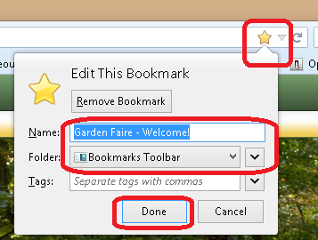

HowTo: Do favorites...
Favorites = Bookmarks = An item that you can open quickly once your browser is open.
Shortcut = An item that you can open before your browser is open.
Browser = E.g. Firefox.
Tasks
Show the bookmark toolbar by default in Firefox. Done. View > Toolbars > Bookmarks Toolbar > Make sure there is a tick beside it.
Add a bookmark to the bookmarks toolbar in Firefox. Done.
- Go to the site that you want to bookmark.
- Double cllick the star on the right side of the address bar.
- The bookmarks context menu will open.
- Name: Give the bookmark a name.
- Folder: Choose the Bookmarks Toolbar folder.
- Click Done.

Questions
What, exactly, are the causes of the "There is a long running script..." error web browsing websites?
- One cause is that a local script is taking a long time to complete it's tasks.
- Another cause is that a script is GETing something from the Internet but with a very slow or non-existant connection.